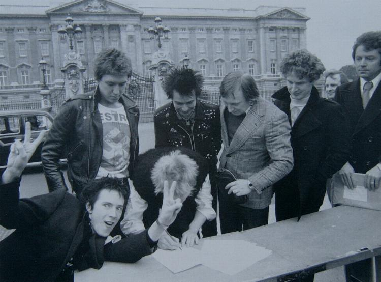

Q Magazine Photographic Supplements
Volume 3 - April 1989 - Moments
Rex
Back
18/21

Next
20/21
Supervised by publicity-shy supremo Malcolm McLaren, The Sex Pistols sign a recording contract for A&M outside Buckingham Palace, March '77. A week later they'd be kicked off the label.